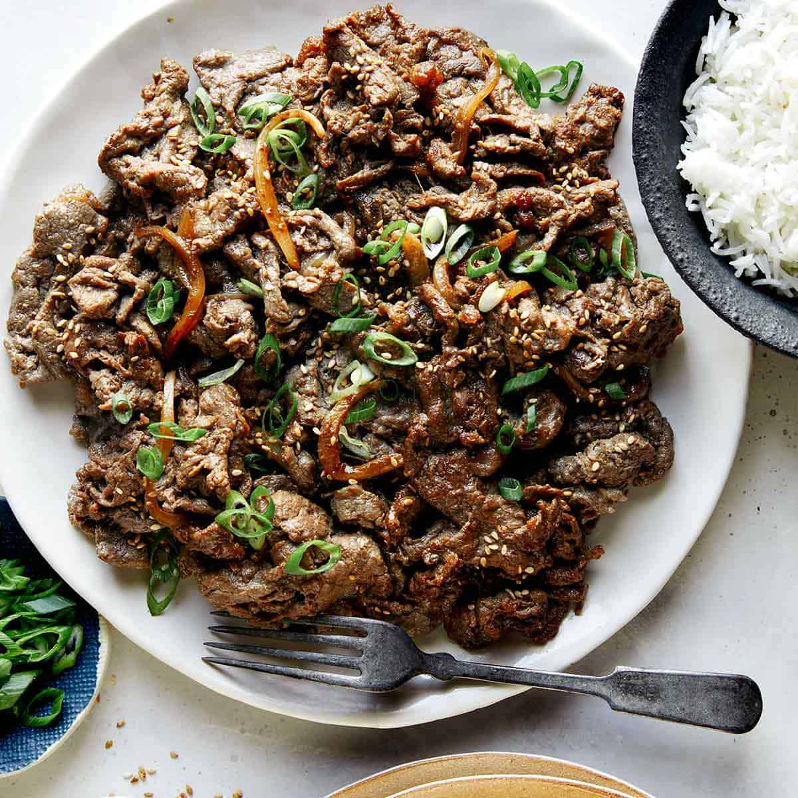

Beef Bulgogi

Description
Bulgogi, also known as Korean BBQ beef, is marinated thinly sliced beef,
typically cooked over an open flame. “Bul” means fire in Korean, and
“gogi” is a general term for meat. While there are other variations such
as chicken and pork, the term generally refers to beef bulgogi. Over the
last decade or so, it has made a remarkable comeback and become very popular
throughout the country. My family loves it!
Ingredients
Dish
- 2 pounds thinly-sliced beef (rib eye or top sirloin)
- 3 scallions, cut into 2-inch pieces
- 1 small onion, thinly sliced
- 2 cups white rice
Marinade
- 6 tablespoons soy sauce
- 3 tablespoons water
- 4 tablespoons sugar ( or you can use 2 T sugar 2 T honey) Use more if not using Korean pear or apple
- 2 tablespoons rice wine or mirin
- 2 tablespoons minced garlic
- 2 tablespoons sesame oil
- 2 teaspoons sesame seeds
- 4 tablespoons grated Korean/Asian pear
- 1/8 teaspoon pepper
Steps
- If using packaged pre-sliced meat, separate the slices. Remove any excess blood from the pre-sliced meat using paper towels.
- Mix all the marinade ingredients in a bowl.
- Place the meat and vegetables in a large bowl. Add the marinade and toss gently to combine everything well. Marinate the meat for 30 minutes to an hour, up to overnight.
-
- Grilling: Grill the meat on a charcoal or gas grill or pan fry in a skillet over high heat until slightly caramelized. If pan searing, preheat the pan nice and hot and cook the meat until slightly caramelized. Do not crowd the skillet.
- Stir-frying: Preheat the pan, and add the meat over high meat. You can crowd the pan to generate some liquid and let the meat cook in its own juice. Cook until the meat is no longer pink. Use all the marinade if you want some sauce at the end.